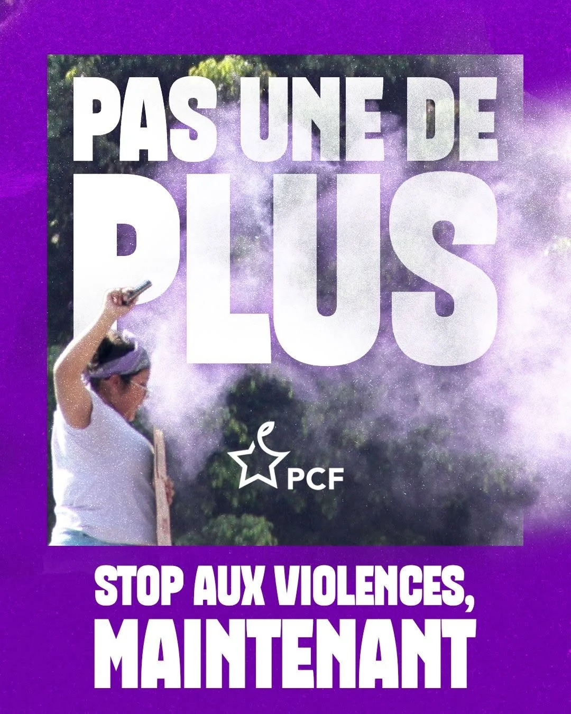

Publication relayée par le PCF 79
Le PCF appelle à agir contre les violences faites aux femmes
Date de mise à jour indiquée par Facebook · 21 novembre 2025
Texte de la publication · PCF national
Pas une de plus. Stop aux violences, maintenant.
La Mission interministérielle pour la protection des femmes contre les violences et la lutte contre la traite des êtres humains, vient de publier son rapport annuel, et les chiffres sont accablants.
En 2024, 107 femmes ont été tuées par leur conjoint ou ex-conjoint.
Parmi elles, 37 avaient déjà signalé les violences.
906 femmes se sont suicidées ou ont tenté de le faire après un harcèlement par leur partenaire.
270 femmes ont survécu à une tentative de féminicide.
Ces chiffres ne sont pas des statistiques : ce sont des vies volées, brisées, ignorées.
Ce sont des signaux d’alarme que l’État refuse encore d’entendre.
Nous exigeons des moyens, de la protection, de la justice.
Nous exigeons la fin de l’impunité.
Nous refusons que chaque année se transforme en liste de victimes.
Pas une de plus. Demain nous marcherons dans toute la France contre les violences faites aux femmes, rejoignez nous.

Sources
PCF national · publication relayée par le PCF 79 · bibliothèque Facebook · AR-0002-FB-00949
À lire aussi · Le PCF appelle à la mobilisation contre les violences sexistes et sexuelles